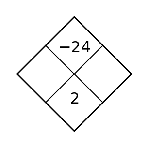
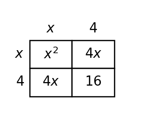
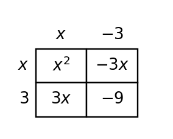
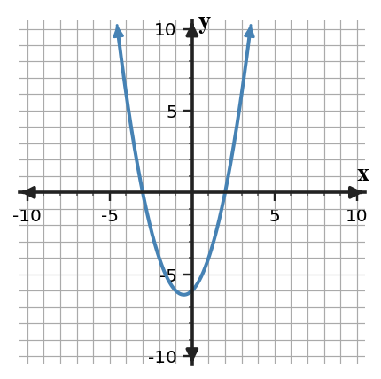

U5-S1-DOK1.01
Circle the greatest common factor in each expression, then write the remaining factor mentally.
- $4x+8$
- $10x+25y+5$
- $2x^2-8x$
- $9x^2y+12x+3xy$
Learning Target: Students will identify common factors and use structure to rewrite polynomial expressions.
Circle the greatest common factor in each expression, then write the remaining factor mentally.
Rewrite each sum as a product by factoring out the greatest common factor.
Identify whether the expression is written in expanded form or factored form.
For each pair, decide whether the expressions are equivalent by naming the common factor that connects them.
Complete the coefficient-and-variable-power table for $18x^3-12x^2+6x$.
| Term | $18x^3$ | $-12x^2$ | $6x$ |
|---|---|---|---|
| Coefficient | _____ | _____ | _____ |
| Power of $x$ | _____ | _____ | _____ |
A student says the greatest common factor of $24x^2+36x$ is $6x$. Name a larger common factor and explain in one sentence why it is larger.
The area model shows a product. Write the total area as a sum and as a product.

Choose the expression that has a greatest common factor of $7x$ and no greater monomial common factor.
Fill in the missing factor: $32r^2-20r=4r(\,\_\_\_\,)$.
Classify each expression as having a numeric GCF only, a variable GCF only, both, or neither.
Find the missing outside factor in each product.
Which term prevents all three terms from sharing a factor of $4x$?
$12x^2+20x+16$
State the term and the greatest common factor the three terms do share.
A rectangle has width $3x$ and length $x+8$. Write its area in factored form and expanded form.
Factor completely over the integers: $2x^2+8$.
Complete the missing areas in the model, then write one equivalent product for the total area.

Factor each expression completely. Then multiply one answer back to verify it.
The expression $24t+18$ represents the total number of tiles in two repeated border designs. Write an equivalent product and explain what each factor could represent in the design.
Use the table to factor the polynomial shown by the terms.
| Term | $16x^3$ | $24x^2$ | $-40x$ |
|---|---|---|---|
| Common numeric factor | $8$ | $8$ | $8$ |
| Common variable factor | $x$ | $x$ | $x$ |
Write the polynomial as a product of the greatest common factor and a remaining polynomial.
Two students factored $12p^2-30p$.
Student A: $6p(2p-5)$
Student B: $3p(4p-10)$
Which expression is factored completely? Support your answer by identifying any remaining common factor.
Rewrite $9x^2y+12xy^2+3xy$ as a product. Then identify the number of terms remaining inside the parentheses.
Build a factored expression that expands to $15q^2-10q+20$. Show the common factor and the remaining polynomial.
Decide whether $4x(3x-2)+6(3x-2)$ is more useful in its current form or after factoring by grouping if the goal is to identify a common binomial factor. Rewrite it as one product.
A garden design uses $6x$ small stones on each of $x$ paths and $18x$ border stones. Write an equivalent expression in factored form and explain the shared quantity.
Find a value of $k$ so that $kx^2+20x$ has greatest common factor $10x$. Explain why your value works.
Factor by grouping: $2x^2+8x+3x+12$. Then multiply to check that the product matches the original expression.
For $36a^4b^2-24a^3b+12a^2b$, find the greatest common monomial factor and write the factored form.
A student factors $18x^2+27x$ as $3x(6x+9)$ and says the job is complete.
Critique the work. Identify what is correct, what is incomplete, and write the expression factored completely.
The expression $2x^2-7x+15$ and the area model are supposed to represent the same product. Find the mismatch, explain how you know, and revise the incorrect cell.

Factor $12x^2+30x$ in two different first steps: one using a common factor of $6x$ and one using a common factor of $3x$. Compare the results and explain why one final answer is considered completely factored.
Without fully expanding every term, argue whether $8n(3n-5)+12(3n-5)$ can reasonably be rewritten as $4(3n-5)(2n+3)$. Use structure to support your conclusion.
A student designed the area model shown to represent a product, but the model does not support the claimed expression $5m^2-12m-6$.
Revise either the expression or one part of the model so the representations match. Then write the matching product and sum.

Create a three-term polynomial with greatest common factor $6x$ such that one term is negative and the polynomial has degree $3$. Then factor it completely and explain how your example satisfies all constraints.
A school club orders identical supply kits and extra replacement parts. Design a short context represented by $4p(3p+2)+8(3p+2)$, then rewrite it as one product and explain what the shared factor means in your context.
Create two different expanded expressions that both factor to $5y(2y-3)$. One expression should have two terms and the other should be written as four terms that can be grouped. Explain why both are equivalent to the same product.
Learning Target: Students will factor quadratic trinomials using patterns, products, sums, and structure.
Complete the diamond problem. The top is the product and the bottom is the sum.

For each pair of numbers, write the product and the sum.
List two integers with the given product and sum.
Choose the factor pair that factors $x^2+5x+6$.
Expand each product to check the middle term.
Factor each trinomial with leading coefficient $1$.
Identify the $a$, $b$, and $c$ values in each trinomial $ax^2+bx+c$.
Use the area model to write the product and the expanded trinomial.

Which expression is a factor of $6x^2+7x-20$?
Check by multiplying with a possible partner factor.
Decide whether each trinomial appears factorable over the integers by checking product-sum possibilities.
Fill in the missing number: $x^2+\_\_x+18=(x+3)(x+6)$.
Name the two binomial factors represented by these algebra tiles.

Factor completely: $2x^2-2x-4$.
Show the two steps for $4x^2-24x+36$: factor out the GCF first, then factor the remaining expression.
Factor each quadratic completely. If it is not factorable over the integers, explain why not.
Use product-sum reasoning to factor $3x^2+10x-8$. Show the pair of numbers used to split the middle term.
Factor each expression completely. Be sure to look for any common factor first.
The expression $65x^2+212x-133$ is already the result of multiplying two factors. Explain how you know the product without finding the factors.
Factor $12x^2+11x-5$ by splitting the middle term. Then verify by multiplying your binomials.
Complete the table for $2x^2+5x+3$ and use it to write the factored form.
| Step | Value |
|---|---|
| Product $ac$ | $6$ |
| Needed sum | $5$ |
| Number pair | _____ and _____ |
| Factored form | _____ |
Factor each polynomial completely.
Use the area model structure to explain why $x^2+7x+12$ factors as $(x+3)(x+4)$, not $(x+2)(x+6)$.
Find the missing constant so that $x^2-9x+\_\_$ factors as $(x-4)(x-5)$. Then write the factored trinomial.
Factor $2x^2+11x-6$ completely. Include the two binomial factors in an order that makes your check easy to follow.
The trinomial $x^2-4x+16$ does not factor over the integers. Show enough product-sum evidence to support that conclusion.
Write a trinomial with leading coefficient $1$, constant term $-28$, and middle coefficient $3$. Then factor it.
You need to factor $6x^2-x-2$. Construct an efficient strategy before starting: identify $ac$, the needed sum, how you will split the middle term, and how you will check the final product.
Analyze the structure of $kx^2+7x-6$. Find two possible integer values of $k$ that make the trinomial factorable over the integers, and explain how the product-sum structure changes.
Compare the product-sum table and the binomial product below. Do they support the same trinomial?
| Product needed | Sum needed | Pair |
|---|---|---|
| $-15$ | $2$ | $5$ and $-3$ |
Product: $(3x+5)(x-3)$. Explain the connection or the conflict.
A student factors $2x^2+5x+3$ as $(2x+3)(x+1)$ and $2x^2+11x-6$ as $(2x-1)(x+6)$.
Critique both answers. For any incorrect answer, identify the error and revise it.
Design a short diamond problem that leads to a quadratic trinomial $ax^2+bx+c$ with $a\ne 1$ and integer factors. Provide the diamond problem, the factored form, and the expanded form.
Synthesize three representations of one trinomial: a diamond problem, a generic rectangle description, and a factored expression. The trinomial must have leading coefficient $2$ and constant term $-15$.
Create a factorable trinomial and a similar-looking non-factorable trinomial. Explain how product-sum evidence distinguishes them.
A classmate only knows how to factor trinomials with leading coefficient $1$. Build a short explanation that extends their method to $6x^2+5x-6$ using product-sum reasoning, grouping, and a check.
Learning Target: Students will recognize and factor special polynomial patterns.
Classify each expression as a difference of squares, a perfect-square trinomial, or neither.
Factor each difference of squares.
Identify the squared-binomial form for each expression.
Complete each square pattern.
Write the conjugate factor pair for each difference of squares.
Use the square area model to write three equivalent expressions for the total area: a sum, a product, and a squared-binomial form.

Identify why $x^2+25$ is not a difference of squares over the integers, even though both terms are squares.
Factor completely by first removing a common factor: $8x^2-72$.
Factor $4x^3-9x$ in two steps. Name the special pattern applied after removing the GCF.
Write the missing middle term so the trinomial is a perfect square: $49x^2+\_\_+1$.
Expand each squared binomial.
Factor each polynomial if possible.
Choose the expression equivalent to $9x^2-36$.
Explain your choice briefly.
Use signs to determine whether the square is $(x+7)^2$ or $(x-7)^2$: $x^2-14x+49$.
Factor each expression completely. Use a special pattern when possible.
Factor $x^2y+10xy+25y$ completely. Explain why removing a common factor first reveals a perfect-square trinomial.
Use the area model to explain why $(x+3)(x-3)$ has no $x$ term in expanded form.

Factor completely: $9x^4-4y^2$.
For each expression, decide the most efficient pattern and factor it.
Complete the table and use it to factor the trinomial.
| Expression | First square | Last square | Middle check |
|---|---|---|---|
| $4x^2-20x+25$ | _____ | _____ | _____ |
Use the signs to write the correct squared binomial.
Rewrite $49x^2+14x+1$ so its perfect-square structure is visible, then factor it.
Find the value of $k$ that makes $x^2+kx+36$ a perfect-square trinomial with a negative binomial factor. Then factor it.
Factor $4x^2-8x+4$ and explain why the result has a repeated factor.
Decide whether $4x^2-12x+9$ is a perfect-square trinomial. Support your answer by checking the first square, last square, and middle term.
Write an expression that is a difference of squares with factors $(5a+2b)$ and $(5a-2b)$. Then expand to verify.
Factor completely: $12x^2-75$.
The expression $x^2+10x+25$ should be represented by a square area model, but the model shown is not a square. Locate the mismatch, explain how you know, and revise the model.

Factor $36x^2-49$ using the difference-of-squares pattern. Then factor it again by thinking of it as a product of conjugates. Compare the two explanations.
A classmate claims $x^2-12x+40$ is almost a perfect square because $40$ is close to $36$. Is that reasoning sufficient? Give a reasonableness argument based on structure, not closeness.
Design a strategy for deciding whether any trinomial is a perfect square before factoring. Test your strategy on $9x^2+30x+25$ and $9x^2+30x+16$.
Create three expressions: one difference of squares, one perfect-square trinomial, and one expression that looks similar but is neither. Explain the structural evidence for each classification.
Two approaches are proposed for $18x^2-50$: first remove a GCF, or first look for a difference of squares. Recommend an approach and justify it by showing the complete factorization.
Create a perfect-square trinomial with a leading term of $16x^2$ and a constant term of $81$. Then create a difference of squares using the same two square terms. Compare the factored forms.
A student says $25a^2-20ab+16b^2=(5a-4b)^2$. Revise the expression or the factorization so the statement becomes true, and explain the exact term that caused the mismatch.
Learning Target: Students will connect factors, zeros, intercepts, and graphs of quadratic functions.
For each factored function, list the zeros.
Write the x-intercepts as ordered pairs for $f(x)=(x+2)(x-7)$.
State the zero that comes from each factor.
Does each quadratic function open upward or downward?
Find the y-intercept of each function by evaluating at $x=0$.
Use the graph to name the x-intercepts and decide whether the vertex is above or below the x-axis.

Complete the sentence: A zero of a function is an input value that makes the output equal to ______.
Match each factor to its x-intercept.
| Factor | $x-5$ | $x+2$ | $x+9$ |
|---|---|---|---|
| x-intercept | _____ | _____ | _____ |
Identify the axis of symmetry halfway between the zeros $-4$ and $6$.
For $y=(x-2)^2$, how many distinct zeros does the function have? Explain the repeated factor in one sentence.
Write a factored function with zeros $-3$ and $8$ and leading coefficient $1$.
Find the zeros and y-intercept of $y=(x+5)(x-1)$.
Use the blank coordinate plane to sketch a parabola with zeros $-2$ and $4$ that opens upward.

For $y=2x^2-7x+3$, identify the y-intercept from the standard form.
For $y=2x^2-7x+3$, give the y-intercept and the two x-intercepts. Show how factoring supports the x-intercepts.
Factor $y=x^2+x-6$ to find the zeros, then sketch it on the blank coordinate plane using the intercepts.
The x-intercepts of $y=2x^2-16x+30$ are $(3,0)$ and $(5,0)$. Find the vertex and explain how symmetry helps.
Write a factored function for a parabola with x-intercepts $(2,0)$ and $(7,0)$ and y-intercept $(0,-8)$.
A ball's height is modeled by $h(t)=-t^2+5t+6$. Use the graph to estimate when the height is $0$ and explain what that zero means.

Factor $y=2x^2+6x+4$ and use the factored form to identify the x-intercepts.
Complete the table for $f(x)=(x-1)(x+3)$ and use it to identify the zeros.
| $x$ | $-3$ | $-2$ | $-1$ | $0$ | $1$ |
|---|---|---|---|---|---|
| $f(x)$ | _____ | _____ | _____ | _____ | _____ |
Write a factored equation for the graph shown, then expand it to standard form.

Use the blank coordinate plane to sketch $y=x^2+6x+8$ from its x-intercepts and vertex.
Determine whether $y=(x+1)^2$ crosses the x-axis or only touches it. Use the repeated factor to justify your answer.
A break-even model has zeros $4$ and $10$ and opens downward. Write one possible factored equation and interpret the interval where the output is positive.
Find the zeros of $y=3x^2-10x+2$ to the nearest tenth using a graphing or table strategy. Explain why factoring over integers is not efficient here.
Analyze the structure of $f(x)=a(x-2)(x+6)$. What features stay the same when $a$ changes, and what features can change? Explain using zeros and input-output behavior.
Compare Graph A and Graph B. Which graph could represent a function with factors $(x+3)$ and $(x-1)$? Support your choice with intercept evidence.

A student says the zeros of $y=(x-4)(x+7)$ are $4$ and $7$ because those are the numbers in the factors.
Critique the reasoning and write a corrected explanation.
The table and equation are supposed to show the same function $f(x)=(x-2)(x+1)$. Find the first mismatch and revise it.
| $x$ | $-1$ | $0$ | $1$ | $2$ | $3$ |
|---|---|---|---|---|---|
| $f(x)$ | $0$ | $-2$ | $-2$ | $1$ | $4$ |
Create a factored quadratic model for a situation where an object starts on the ground, rises, and returns to the ground after $6$ seconds. Include the equation, the zeros, and a sentence interpreting the zeros.
A proposed model for a break-even situation is $P(x)=2(x-5)(x+1)$. The context says both break-even points must be positive. Revise the model and justify your revision.
Synthesize a table, a graph sketch, and a factored equation for a quadratic with zeros $-2$ and $4$ and y-intercept $-8$.
A student models a kicked ball with $h(t)=(t-2)(t-8)$. The situation should have height positive between launch and landing. Revise the equation so the height is positive between the zeros, and explain your reasoning.
Learning Target: Students will compare standard, vertex, and factored forms of quadratic functions and determine which form best reveals key features.
Name the form of each quadratic: standard, vertex, or factored.
For each form, state the feature that is easiest to read.
Identify the vertex from each vertex-form function.
Identify the zeros from each factored-form function.
Give the y-intercept of each function without rewriting it.
Use the graph to identify the vertex and decide whether it is a maximum or minimum.

Complete the equivalent forms for $y=x^2-6x+5$.
Choose the form that best answers the question: What are the x-intercepts?
State which of the three forms of $y=x^2-4x-5$ best reveals the minimum value, and give that minimum value.
For $y=-(x+2)^2+3$, state the maximum value and where it occurs.
Match each feature to the form that reveals it most directly.
| Feature | Most direct form |
|---|---|
| zeros | _____ |
| vertex | _____ |
| y-intercept in standard form | _____ |
Graph $y=x^2-4$ on the blank coordinate plane using a short table of values.
Rewrite $y=x^2+2x-8$ in factored form.
For $f(x)=3x^2+15x-18$, identify whether the function has a lowest output or highest output. Explain using the sign of the leading coefficient.
For $f(x)=x^2-6x+5$, write factored form and vertex form. Then identify the zeros, vertex, and y-intercept.
For $f(x)=-(x+2)^2+3$, identify the vertex and maximum value, then explain why vertex form makes those features direct.
Make a table and graph the quadratic $y=x^2-x-6$ on the blank coordinate plane. Use your graph to estimate the x-intercepts.
Use the graph to write two equivalent forms of the same quadratic: factored form and vertex form.

Complete the table to compare what each form reveals for $y=x^2-4x-5$.
| Form | Expression | Feature revealed |
|---|---|---|
| standard | $x^2-4x-5$ | _____ |
| factored | $(x-5)(x+1)$ | _____ |
| vertex | $(x-2)^2-9$ | _____ |
Rewrite $y=2(x-1)(x-5)$ in standard form and use the factored form to identify the zeros.
Rewrite $y=(x+3)^2-16$ in factored form and use both forms to identify the vertex and zeros.
For the profit model shown, identify the maximum profit from the graph and explain why vertex form is useful for this question.

Use x-intercepts and vertex to sketch $y=x^2-5x+6$ on the blank coordinate plane.
Find the lowest point of $f(x)=3x^2+15x-18$. Explain how you know it is the lowest.
A function has zeros $-4$ and $2$ and vertex $(-1,-9)$. Write a possible factored form and use the vertex to find the leading coefficient.
Compare Graph A and Graph B. For each graph, identify one feature that would be easiest to represent with vertex form and one feature easiest to represent with factored form.

Two students rewrite $x^2-4x-5$.
Student A uses $(x-5)(x+1)$ to answer where the function has zeros. Student B uses $(x-2)^2-9$ to answer the same question.
Compare the two methods and decide which is more direct for this question.
A context asks for the maximum height of a quadratic model. A student chooses factored form because it shows the zeros. Is that a reasonable form choice? Give a reasoned argument and name a more useful form if needed.
Construct a strategy for choosing among standard, vertex, and factored form when a problem asks for y-intercept, zeros, or vertex. Test your strategy on $y=x^2-4x-5$.
Compare the equation $y=(x-2)^2-9$, the graph, and the table. Explain how each representation shows or hides the same key features.
| $x$ | $-1$ | $0$ | $2$ | $5$ |
|---|---|---|---|---|
| $y$ | $0$ | $-5$ | $-9$ | $0$ |
Design a short context where the zeros and vertex of a quadratic both have meaning. Give the model in two equivalent forms and explain which form answers each contextual question best.
Recommend a form for each task using the same quadratic $y=x^2-6x+5$: finding zeros, finding the minimum, and finding the y-intercept. Justify each recommendation with an equivalent form when helpful.
Create a quadratic function with zeros $1$ and $7$ and minimum value $-18$. Write it in factored form and vertex form, then explain how each form reveals different features.
A student says $y=(x-4)^2+9$ is best for finding x-intercepts because the zeros are $4$ and $9$. Recommend a correction: address the misconception, choose a better method or form, and state whether real x-intercepts exist.